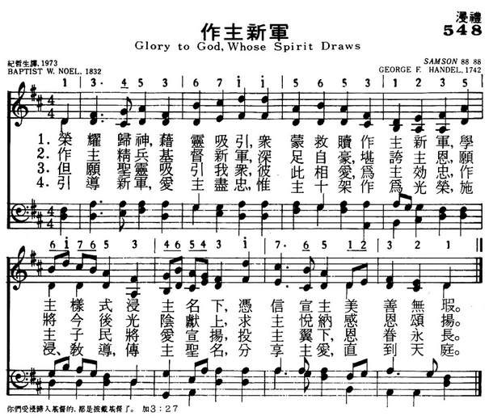

|
|
|
|
Glory to God, whose Spirit draws |
548做主新军
1.荣耀归神，藉灵吸引，众蒙救赎作主新军，
学主样式浸主名下，凭信宣主美善无瑕。 2.作主精兵，基督新军，深足自豪，堪夸主恩， 愿将今后光阴献上，求主悦纳感恩颂扬。 3.但愿圣灵吸引我众，彼此相爱，为主效忠， 作主子民将爱宣扬，投主翼下，恩眷永长。 4.引导新军，爱主尽忠，惟主十架作为光荣， 施浸教导，传主圣名，分享主爱，直到天庭。 |
|
https://www.mred365.cn/szxg/7551.html

|
|
|
|
|

| Text: | Glory to God, whose Spirit draws |
| Author: | Baptist W. Noel |
| Short Name: | Baptist Wriothesley Noel |
| Full Name: | Noel, Baptist Wriothesley, 1799-1873 |
| Birth Year: | 1799 |
| Death Year: | 1873 |
Noel, Hon. Baptist
Wriothesley, M.A., younger son of Sir Gerard Noel Noel, Bart., and
brother of the Earl of Gainsborough, was born at Leithmont, near Leith, July
10, 1799, and educated at Trinity College, Cambridge. Taking Holy Orders he
was for some time Incumbent of St. John's Episcopal Chapel, Bedford Row,
London, and Chaplain to the Queen; but in 1848 he seceded from the Church of
England, and subsequently became a Baptist Minister. He was pastor of St.
John's Street Chapel, Bedford Row, until 1868. He died Jan. 19, 1873. His
prose works, about twelve in all, were published between 1847 and 1863. His
association with hymnology is through:—
(1) A Selection of Psalms and Hymns adapted chiefly for
Congregational and Social Worship by Baptist Wriothesley Noel, M.A. (2) Hymns
about Jesus, by Baptist Wriothesley Noel, N.D. A collection of 159
hymns, the greater part of which are his own or recasts by him of older
hymns.
The Selection appeared in 1832. It passed
through several editions (2nd ed., 1838; 3rd, 1848, &c), that for 1853 being
enlarged, and having also an Appendix of
39 original "Hymns to be Used at the Baptism of Believers." From this Selection the
following hymns are still in common use:—
1. Devoted unto Thee. Holy
Baptism. From "0 God, Who art our Friend."
2. Glory to God, Whose Spirit draws. Holy
Baptism.
3. Jesus, the Lord of glory died. Jesus
the Guide.
4. Lord, Thou hast promised to baptize. Holy
Baptism.
5. We gave [give] ourselves to Thee. Holy
Baptism.
--John Julian, Dictionary of Hymnology (1907)